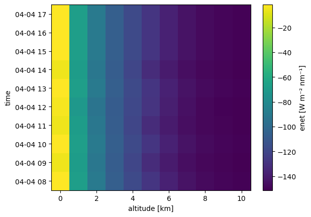
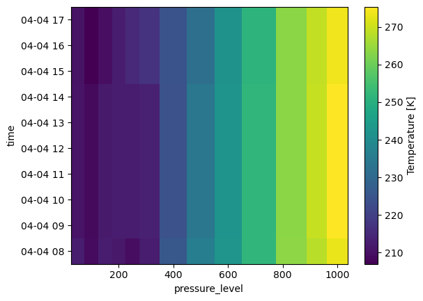
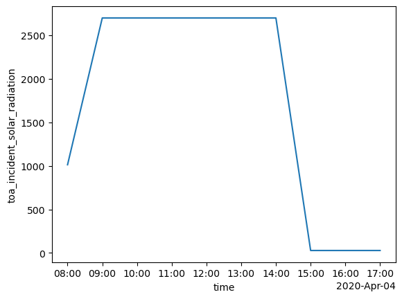

ERA5 Atmospheric Profiles#
Integration of ERA5 reanalysis data for realistic atmospheric profile input to radiative transfer simulations.
import numpy as np
import matplotlib.pyplot as plt
import xarray as xr
import gcsfs
import os
# we use the GCSFileSystem to access the ERA5 data stored in Google Cloud Storage
gcs = gcsfs.GCSFileSystem(token='anon')
path = 'gs://gcp-public-data-arco-era5/ar/1959-2022-6h-128x64_equiangular_with_poles_conservative.zarr/'
full_era5 = xr.open_zarr(gcs.get_mapper(path), chunks='auto')
#full_era5.to_netcdf('../data/era5_6h_128x64.nc', engine='h5netcdf')
/projekt_agmwend/home_rad/Joshua/micromamba/envs/mamba_josh/lib/python3.12/site-packages/xarray/backends/plugins.py:110: RuntimeWarning: Engine 'gini' loading failed:
module 'numpy' has no attribute 'cumproduct'
external_backend_entrypoints = backends_dict_from_pkg(entrypoints_unique)
original_era5 = xr.open_dataset('/projekt_agmwend/data_raw/COMPEX-EC/04_ERA5/ERA5_pressure_levels/20250418.nc')
full_era5
<xarray.Dataset> Size: 326GB
Dimensions: (time: 92040,
longitude: 128,
latitude: 64, level: 13)
Coordinates:
* latitude (latitude) float64 512B ...
* level (level) int64 104B 50 ....
* longitude (longitude) float64 1kB ...
* time (time) datetime64[ns] 736kB ...
Data variables: (12/38)
10m_u_component_of_wind (time, longitude, latitude) float32 3GB dask.array<chunksize=(40, 128, 64), meta=np.ndarray>
10m_v_component_of_wind (time, longitude, latitude) float32 3GB dask.array<chunksize=(40, 128, 64), meta=np.ndarray>
10m_wind_speed (time, longitude, latitude) float32 3GB dask.array<chunksize=(40, 128, 64), meta=np.ndarray>
2m_temperature (time, longitude, latitude) float32 3GB dask.array<chunksize=(40, 128, 64), meta=np.ndarray>
angle_of_sub_gridscale_orography (longitude, latitude) float32 33kB dask.array<chunksize=(128, 64), meta=np.ndarray>
anisotropy_of_sub_gridscale_orography (longitude, latitude) float32 33kB dask.array<chunksize=(128, 64), meta=np.ndarray>
... ...
type_of_high_vegetation (longitude, latitude) float32 33kB dask.array<chunksize=(128, 64), meta=np.ndarray>
type_of_low_vegetation (longitude, latitude) float32 33kB dask.array<chunksize=(128, 64), meta=np.ndarray>
u_component_of_wind (time, level, longitude, latitude) float32 39GB dask.array<chunksize=(40, 13, 128, 64), meta=np.ndarray>
v_component_of_wind (time, level, longitude, latitude) float32 39GB dask.array<chunksize=(40, 13, 128, 64), meta=np.ndarray>
vertical_velocity (time, level, longitude, latitude) float32 39GB dask.array<chunksize=(40, 13, 128, 64), meta=np.ndarray>
wind_speed (time, level, longitude, latitude) float32 39GB dask.array<chunksize=(40, 13, 128, 64), meta=np.ndarray>era5_to_sim = full_era5.rename({
'sea_surface_temperature': 'surface_temperature',
'temperature': 't',
'specific_humidity': 'q',
'geopotential': 'z',
'level': 'pressure_level',
'time' : 'valid_time',
})
### manually add ozone profile if not present
if 'o3' not in era5_to_sim.data_vars:
# Use a constant profile for ozone, e.g., 300 DU
# Convert DU to number density (1 DU = 2.687e19 molecules/m^2)
# Assume a standard atmosphere for conversion
altitude_km = era5_to_sim['z'] / 1000.0 # Convert geopotential height to km
o3_profile = xr.DataArray(
data=300e-6 * 2.687e19 * np.exp(-altitude_km / 8.5), # Example exponential decay
dims=era5_to_sim['z'].dims,
coords=era5_to_sim['z'].coords,
name='o3'
)
era5_to_sim = era5_to_sim.assign(o3=o3_profile)
# Import PyRadtran components using NEW IO system
from pyradtran.interface import PyRadtranAccessor # This should register the accessor automatically
import matplotlib.pyplot as plt
import numpy as np
import xarray as xr
from pathlib import Path
import pandas as pd
# Load the configuration from the YAML file
config_path = Path('../config/thermal_config.yaml')
import logging
# change to "DEBUG" if you want to see more output
logging.getLogger('pyradtran').setLevel(logging.DEBUG)
N_timesteps = 10
# stationary simulation at constant altitude, latitude, and longitude but with varying time
# be aware that the max altitude needs to be lower than the max altitude in the ERA5 data
ds = xr.Dataset(
coords={
'time' : pd.date_range('2020-04-04T08:00:00', periods=N_timesteps, freq='h'),
'latitude' : ('time', [61.0] * N_timesteps),
'longitude' : ('time', [22.0] * N_timesteps),
'altitude' : ('altitude', np.arange(0, 11, 1)),
}
)
# load the ERA5 data for the specified space and time // this didn't make it faster...
ds_era5_local = era5_to_sim.sel(
latitude=ds['latitude'],
longitude=ds['longitude'],
valid_time=ds['time'],
method='nearest'
).load()
ds_sim = ds.pyradtran.run_uvspec(
config_path=config_path,
return_dataset=True,
#save_to_file=True,
era5_atmosphere=era5_to_sim,
)
2025-07-22 02:09:39,213 - pyradtran.interface - INFO - ERA5 atmosphere dataset validated with 13 pressure levels
2025-07-22 02:09:39,215 - pyradtran.interface - INFO - Altitude found as coordinate - using 11 levels for zout: [ 0 1 2 3 4 5 6 7 8 9 10]
2025-07-22 02:09:39,216 - pyradtran.interface - INFO - Auto-generating output path: work/xarray_example_20250722_020939.nc
2025-07-22 02:09:39,216 - pyradtran.interface - INFO - Creating ERA5 atmosphere files for simulation points...
2025-07-22 02:09:39,253 - pyradtran.io_old - INFO - 'co2' variable not found in dataset. Using constant 420 ppmv.
2025-07-22 02:09:39,255 - pyradtran.io_old - INFO - 'no2' variable not found in dataset. Using zero concentration.
2025-07-22 02:09:49,560 - pyradtran.io_old - INFO - Successfully created libRadtran atmosphere file at: work/era5_atmospheres/era5_atm_20200404_080000_61.00_22.00.dat
2025-07-22 02:09:49,577 - pyradtran.interface - DEBUG - Created ERA5 atmosphere file for 20200404_080000_61.00_22.00: work/era5_atmospheres/era5_atm_20200404_080000_61.00_22.00.dat
2025-07-22 02:09:49,634 - pyradtran.io_old - INFO - 'co2' variable not found in dataset. Using constant 420 ppmv.
2025-07-22 02:09:49,641 - pyradtran.io_old - INFO - 'no2' variable not found in dataset. Using zero concentration.
2025-07-22 02:09:59,960 - pyradtran.io_old - INFO - Successfully created libRadtran atmosphere file at: work/era5_atmospheres/era5_atm_20200404_090000_61.00_22.00.dat
2025-07-22 02:09:59,962 - pyradtran.interface - DEBUG - Created ERA5 atmosphere file for 20200404_090000_61.00_22.00: work/era5_atmospheres/era5_atm_20200404_090000_61.00_22.00.dat
2025-07-22 02:09:59,998 - pyradtran.io_old - INFO - 'co2' variable not found in dataset. Using constant 420 ppmv.
2025-07-22 02:09:59,999 - pyradtran.io_old - INFO - 'no2' variable not found in dataset. Using zero concentration.
2025-07-22 02:10:10,251 - pyradtran.io_old - INFO - Successfully created libRadtran atmosphere file at: work/era5_atmospheres/era5_atm_20200404_100000_61.00_22.00.dat
2025-07-22 02:10:10,253 - pyradtran.interface - DEBUG - Created ERA5 atmosphere file for 20200404_100000_61.00_22.00: work/era5_atmospheres/era5_atm_20200404_100000_61.00_22.00.dat
2025-07-22 02:10:10,291 - pyradtran.io_old - INFO - 'co2' variable not found in dataset. Using constant 420 ppmv.
2025-07-22 02:10:10,293 - pyradtran.io_old - INFO - 'no2' variable not found in dataset. Using zero concentration.
2025-07-22 02:10:20,505 - pyradtran.io_old - INFO - Successfully created libRadtran atmosphere file at: work/era5_atmospheres/era5_atm_20200404_110000_61.00_22.00.dat
2025-07-22 02:10:20,508 - pyradtran.interface - DEBUG - Created ERA5 atmosphere file for 20200404_110000_61.00_22.00: work/era5_atmospheres/era5_atm_20200404_110000_61.00_22.00.dat
2025-07-22 02:10:20,549 - pyradtran.io_old - INFO - 'co2' variable not found in dataset. Using constant 420 ppmv.
2025-07-22 02:10:20,551 - pyradtran.io_old - INFO - 'no2' variable not found in dataset. Using zero concentration.
2025-07-22 02:10:30,788 - pyradtran.io_old - INFO - Successfully created libRadtran atmosphere file at: work/era5_atmospheres/era5_atm_20200404_120000_61.00_22.00.dat
2025-07-22 02:10:30,790 - pyradtran.interface - DEBUG - Created ERA5 atmosphere file for 20200404_120000_61.00_22.00: work/era5_atmospheres/era5_atm_20200404_120000_61.00_22.00.dat
2025-07-22 02:10:30,831 - pyradtran.io_old - INFO - 'co2' variable not found in dataset. Using constant 420 ppmv.
2025-07-22 02:10:30,832 - pyradtran.io_old - INFO - 'no2' variable not found in dataset. Using zero concentration.
2025-07-22 02:10:40,995 - pyradtran.io_old - INFO - Successfully created libRadtran atmosphere file at: work/era5_atmospheres/era5_atm_20200404_130000_61.00_22.00.dat
2025-07-22 02:10:40,996 - pyradtran.interface - DEBUG - Created ERA5 atmosphere file for 20200404_130000_61.00_22.00: work/era5_atmospheres/era5_atm_20200404_130000_61.00_22.00.dat
2025-07-22 02:10:41,030 - pyradtran.io_old - INFO - 'co2' variable not found in dataset. Using constant 420 ppmv.
2025-07-22 02:10:41,032 - pyradtran.io_old - INFO - 'no2' variable not found in dataset. Using zero concentration.
2025-07-22 02:10:51,332 - pyradtran.io_old - INFO - Successfully created libRadtran atmosphere file at: work/era5_atmospheres/era5_atm_20200404_140000_61.00_22.00.dat
2025-07-22 02:10:51,336 - pyradtran.interface - DEBUG - Created ERA5 atmosphere file for 20200404_140000_61.00_22.00: work/era5_atmospheres/era5_atm_20200404_140000_61.00_22.00.dat
2025-07-22 02:10:51,412 - pyradtran.io_old - INFO - 'co2' variable not found in dataset. Using constant 420 ppmv.
2025-07-22 02:10:51,414 - pyradtran.io_old - INFO - 'no2' variable not found in dataset. Using zero concentration.
2025-07-22 02:11:01,715 - pyradtran.io_old - INFO - Successfully created libRadtran atmosphere file at: work/era5_atmospheres/era5_atm_20200404_150000_61.00_22.00.dat
2025-07-22 02:11:01,718 - pyradtran.interface - DEBUG - Created ERA5 atmosphere file for 20200404_150000_61.00_22.00: work/era5_atmospheres/era5_atm_20200404_150000_61.00_22.00.dat
2025-07-22 02:11:01,762 - pyradtran.io_old - INFO - 'co2' variable not found in dataset. Using constant 420 ppmv.
2025-07-22 02:11:01,764 - pyradtran.io_old - INFO - 'no2' variable not found in dataset. Using zero concentration.
2025-07-22 02:11:11,953 - pyradtran.io_old - INFO - Successfully created libRadtran atmosphere file at: work/era5_atmospheres/era5_atm_20200404_160000_61.00_22.00.dat
2025-07-22 02:11:11,955 - pyradtran.interface - DEBUG - Created ERA5 atmosphere file for 20200404_160000_61.00_22.00: work/era5_atmospheres/era5_atm_20200404_160000_61.00_22.00.dat
2025-07-22 02:11:11,996 - pyradtran.io_old - INFO - 'co2' variable not found in dataset. Using constant 420 ppmv.
2025-07-22 02:11:11,998 - pyradtran.io_old - INFO - 'no2' variable not found in dataset. Using zero concentration.
2025-07-22 02:11:22,245 - pyradtran.io_old - INFO - Successfully created libRadtran atmosphere file at: work/era5_atmospheres/era5_atm_20200404_170000_61.00_22.00.dat
2025-07-22 02:11:22,248 - pyradtran.interface - DEBUG - Created ERA5 atmosphere file for 20200404_170000_61.00_22.00: work/era5_atmospheres/era5_atm_20200404_170000_61.00_22.00.dat
2025-07-22 02:11:22,249 - pyradtran.interface - INFO - Running 10 simulations across time/location points...
2025-07-22 02:11:22,841 - pyradtran.core - DEBUG - Using ERA5 atmosphere file: /projekt_agmwend/home_rad/Joshua/HALO-AC3_Arctic_leads/sim/pyradtran/book/notebooks/work/era5_atmospheres/era5_atm_20200404_170000_61.00_22.00.dat
2025-07-22 02:11:22,841 - pyradtran.core - DEBUG - Using ERA5 atmosphere file: /projekt_agmwend/home_rad/Joshua/HALO-AC3_Arctic_leads/sim/pyradtran/book/notebooks/work/era5_atmospheres/era5_atm_20200404_150000_61.00_22.00.dat
2025-07-22 02:11:22,841 - pyradtran.core - DEBUG - Using ERA5 atmosphere file: /projekt_agmwend/home_rad/Joshua/HALO-AC3_Arctic_leads/sim/pyradtran/book/notebooks/work/era5_atmospheres/era5_atm_20200404_100000_61.00_22.00.dat
2025-07-22 02:11:22,841 - pyradtran.core - DEBUG - Using ERA5 atmosphere file: /projekt_agmwend/home_rad/Joshua/HALO-AC3_Arctic_leads/sim/pyradtran/book/notebooks/work/era5_atmospheres/era5_atm_20200404_140000_61.00_22.00.dat
2025-07-22 02:11:22,841 - pyradtran.core - DEBUG - Using ERA5 atmosphere file: /projekt_agmwend/home_rad/Joshua/HALO-AC3_Arctic_leads/sim/pyradtran/book/notebooks/work/era5_atmospheres/era5_atm_20200404_130000_61.00_22.00.dat
2025-07-22 02:11:22,841 - pyradtran.core - DEBUG - Using ERA5 atmosphere file: /projekt_agmwend/home_rad/Joshua/HALO-AC3_Arctic_leads/sim/pyradtran/book/notebooks/work/era5_atmospheres/era5_atm_20200404_160000_61.00_22.00.dat
2025-07-22 02:11:22,840 - pyradtran.core - DEBUG - Using ERA5 atmosphere file: /projekt_agmwend/home_rad/Joshua/HALO-AC3_Arctic_leads/sim/pyradtran/book/notebooks/work/era5_atmospheres/era5_atm_20200404_080000_61.00_22.00.dat
2025-07-22 02:11:22,847 - pyradtran.core - DEBUG - Using ERA5 atmosphere file: /projekt_agmwend/home_rad/Joshua/HALO-AC3_Arctic_leads/sim/pyradtran/book/notebooks/work/era5_atmospheres/era5_atm_20200404_120000_61.00_22.00.dat
2025-07-22 02:11:22,848 - pyradtran.core - DEBUG - Using ERA5 atmosphere file: /projekt_agmwend/home_rad/Joshua/HALO-AC3_Arctic_leads/sim/pyradtran/book/notebooks/work/era5_atmospheres/era5_atm_20200404_090000_61.00_22.00.dat
2025-07-22 02:11:22,849 - pyradtran.core - DEBUG - Using ERA5 atmosphere file: /projekt_agmwend/home_rad/Joshua/HALO-AC3_Arctic_leads/sim/pyradtran/book/notebooks/work/era5_atmospheres/era5_atm_20200404_110000_61.00_22.00.dat
2025-07-22 02:11:22,852 - pyradtran.core - DEBUG - Generated input file: /projekt_agmwend/home_rad/Joshua/HALO-AC3_Arctic_leads/sim/pyradtran/book/notebooks/work/uvspec_20200404_140000_ft4j6rlv.inp
2025-07-22 02:11:22,853 - pyradtran.core - DEBUG - Generated input file: /projekt_agmwend/home_rad/Joshua/HALO-AC3_Arctic_leads/sim/pyradtran/book/notebooks/work/uvspec_20200404_160000_is3yo_lx.inp
2025-07-22 02:11:22,853 - pyradtran.core - DEBUG - Generated input file: /projekt_agmwend/home_rad/Joshua/HALO-AC3_Arctic_leads/sim/pyradtran/book/notebooks/work/uvspec_20200404_150000_u4m6fxwi.inp
2025-07-22 02:11:22,853 - pyradtran.core - DEBUG - Generated input file: /projekt_agmwend/home_rad/Joshua/HALO-AC3_Arctic_leads/sim/pyradtran/book/notebooks/work/uvspec_20200404_100000_7gxwtl4j.inp
2025-07-22 02:11:22,853 - pyradtran.core - DEBUG - Generated input file: /projekt_agmwend/home_rad/Joshua/HALO-AC3_Arctic_leads/sim/pyradtran/book/notebooks/work/uvspec_20200404_130000_kgmjrz41.inp
2025-07-22 02:11:22,854 - pyradtran.core - DEBUG - Running uvspec: /opt/libradtran/2.0.4/bin/uvspec < uvspec_20200404_140000_ft4j6rlv.inp > uvspec_20200404_140000_ft4j6rlv.out
2025-07-22 02:11:22,855 - pyradtran.core - DEBUG - Running uvspec: /opt/libradtran/2.0.4/bin/uvspec < uvspec_20200404_150000_u4m6fxwi.inp > uvspec_20200404_150000_u4m6fxwi.out
2025-07-22 02:11:22,855 - pyradtran.core - DEBUG - Running uvspec: /opt/libradtran/2.0.4/bin/uvspec < uvspec_20200404_100000_7gxwtl4j.inp > uvspec_20200404_100000_7gxwtl4j.out
2025-07-22 02:11:22,855 - pyradtran.core - DEBUG - Running uvspec: /opt/libradtran/2.0.4/bin/uvspec < uvspec_20200404_160000_is3yo_lx.inp > uvspec_20200404_160000_is3yo_lx.out
2025-07-22 02:11:22,855 - pyradtran.core - DEBUG - Running uvspec: /opt/libradtran/2.0.4/bin/uvspec < uvspec_20200404_130000_kgmjrz41.inp > uvspec_20200404_130000_kgmjrz41.out
2025-07-22 02:11:22,855 - pyradtran.core - DEBUG - Generated input file: /projekt_agmwend/home_rad/Joshua/HALO-AC3_Arctic_leads/sim/pyradtran/book/notebooks/work/uvspec_20200404_080000_bwt3t41y.inp
2025-07-22 02:11:22,856 - pyradtran.core - DEBUG - Generated input file: /projekt_agmwend/home_rad/Joshua/HALO-AC3_Arctic_leads/sim/pyradtran/book/notebooks/work/uvspec_20200404_090000_gv3ud6w_.inp
2025-07-22 02:11:22,856 - pyradtran.core - DEBUG - Generated input file: /projekt_agmwend/home_rad/Joshua/HALO-AC3_Arctic_leads/sim/pyradtran/book/notebooks/work/uvspec_20200404_120000_rd7ew1io.inp
2025-07-22 02:11:22,855 - pyradtran.core - DEBUG - Generated input file: /projekt_agmwend/home_rad/Joshua/HALO-AC3_Arctic_leads/sim/pyradtran/book/notebooks/work/uvspec_20200404_170000_u_voq5tk.inp
2025-07-22 02:11:22,858 - pyradtran.core - DEBUG - Running uvspec: /opt/libradtran/2.0.4/bin/uvspec < uvspec_20200404_090000_gv3ud6w_.inp > uvspec_20200404_090000_gv3ud6w_.out
2025-07-22 02:11:22,858 - pyradtran.core - DEBUG - Running uvspec: /opt/libradtran/2.0.4/bin/uvspec < uvspec_20200404_080000_bwt3t41y.inp > uvspec_20200404_080000_bwt3t41y.out
2025-07-22 02:11:22,858 - pyradtran.core - DEBUG - Running uvspec: /opt/libradtran/2.0.4/bin/uvspec < uvspec_20200404_120000_rd7ew1io.inp > uvspec_20200404_120000_rd7ew1io.out
2025-07-22 02:11:22,858 - pyradtran.core - DEBUG - Generated input file: /projekt_agmwend/home_rad/Joshua/HALO-AC3_Arctic_leads/sim/pyradtran/book/notebooks/work/uvspec_20200404_110000_mq0vtgh4.inp
2025-07-22 02:11:22,859 - pyradtran.core - DEBUG - Running uvspec: /opt/libradtran/2.0.4/bin/uvspec < uvspec_20200404_170000_u_voq5tk.inp > uvspec_20200404_170000_u_voq5tk.out
2025-07-22 02:11:22,860 - pyradtran.core - DEBUG - Running uvspec: /opt/libradtran/2.0.4/bin/uvspec < uvspec_20200404_110000_mq0vtgh4.inp > uvspec_20200404_110000_mq0vtgh4.out
2025-07-22 02:11:26,532 - pyradtran.core - DEBUG - uvspec finished successfully for uvspec_20200404_160000_is3yo_lx.inp.
2025-07-22 02:11:26,532 - pyradtran.core - DEBUG - uvspec finished successfully for uvspec_20200404_130000_kgmjrz41.inp.
2025-07-22 02:11:26,534 - pyradtran.io - DEBUG - Initialized parser with columns: ['zout', 'lambda', 'sza', 'edir', 'eglo', 'edn', 'eup', 'enet', 'albedo']
2025-07-22 02:11:26,535 - pyradtran.io - DEBUG - Original user columns: ['zout', 'lambda', 'sza', 'edir', 'eglo', 'edn', 'eup', 'enet', 'albedo']
2025-07-22 02:11:26,534 - pyradtran.io - DEBUG - Initialized parser with columns: ['zout', 'lambda', 'sza', 'edir', 'eglo', 'edn', 'eup', 'enet', 'albedo']
2025-07-22 02:11:26,535 - pyradtran.core - DEBUG - uvspec finished successfully for uvspec_20200404_080000_bwt3t41y.inp.
2025-07-22 02:11:26,537 - pyradtran.io - DEBUG - Original user columns: ['zout', 'lambda', 'sza', 'edir', 'eglo', 'edn', 'eup', 'enet', 'albedo']
2025-07-22 02:11:26,535 - pyradtran.core - DEBUG - uvspec finished successfully for uvspec_20200404_110000_mq0vtgh4.inp.
2025-07-22 02:11:26,536 - pyradtran.core - DEBUG - uvspec finished successfully for uvspec_20200404_120000_rd7ew1io.inp.
2025-07-22 02:11:26,538 - pyradtran.io - INFO - Detected output type: integrated_multi_altitude
2025-07-22 02:11:26,537 - pyradtran.core - DEBUG - uvspec finished successfully for uvspec_20200404_170000_u_voq5tk.inp.
2025-07-22 02:11:26,539 - pyradtran.io - INFO - Detected output type: integrated_multi_altitude
2025-07-22 02:11:26,539 - pyradtran.io - DEBUG - Initialized parser with columns: ['zout', 'lambda', 'sza', 'edir', 'eglo', 'edn', 'eup', 'enet', 'albedo']
2025-07-22 02:11:26,539 - pyradtran.io - DEBUG - Initialized parser with columns: ['zout', 'lambda', 'sza', 'edir', 'eglo', 'edn', 'eup', 'enet', 'albedo']
2025-07-22 02:11:26,540 - pyradtran.io - DEBUG - Initialized parser with columns: ['zout', 'lambda', 'sza', 'edir', 'eglo', 'edn', 'eup', 'enet', 'albedo']
2025-07-22 02:11:26,539 - pyradtran.io - DEBUG - Initialized parser with columns: ['zout', 'lambda', 'sza', 'edir', 'eglo', 'edn', 'eup', 'enet', 'albedo']
2025-07-22 02:11:26,541 - pyradtran.io - DEBUG - Original user columns: ['zout', 'lambda', 'sza', 'edir', 'eglo', 'edn', 'eup', 'enet', 'albedo']
2025-07-22 02:11:26,540 - pyradtran.io - DEBUG - Original user columns: ['zout', 'lambda', 'sza', 'edir', 'eglo', 'edn', 'eup', 'enet', 'albedo']
2025-07-22 02:11:26,541 - pyradtran.io - DEBUG - Original user columns: ['zout', 'lambda', 'sza', 'edir', 'eglo', 'edn', 'eup', 'enet', 'albedo']
2025-07-22 02:11:26,541 - pyradtran.io - DEBUG - Original user columns: ['zout', 'lambda', 'sza', 'edir', 'eglo', 'edn', 'eup', 'enet', 'albedo']
2025-07-22 02:11:26,544 - pyradtran.interface - DEBUG - Successfully processed simulation 1/10 for time 2020-04-04T13:00:00.000000000
2025-07-22 02:11:26,543 - pyradtran.io - INFO - Detected output type: integrated_multi_altitude
2025-07-22 02:11:26,547 - pyradtran.interface - DEBUG - Successfully processed simulation 2/10 for time 2020-04-04T16:00:00.000000000
2025-07-22 02:11:26,543 - pyradtran.io - INFO - Detected output type: integrated_multi_altitude
2025-07-22 02:11:26,545 - pyradtran.io - INFO - Detected output type: integrated_multi_altitude
2025-07-22 02:11:26,545 - pyradtran.io - INFO - Detected output type: integrated_multi_altitude
2025-07-22 02:11:26,551 - pyradtran.interface - DEBUG - Successfully processed simulation 3/10 for time 2020-04-04T11:00:00.000000000
2025-07-22 02:11:26,552 - pyradtran.interface - DEBUG - Successfully processed simulation 4/10 for time 2020-04-04T17:00:00.000000000
2025-07-22 02:11:26,561 - pyradtran.interface - DEBUG - Successfully processed simulation 5/10 for time 2020-04-04T08:00:00.000000000
2025-07-22 02:11:26,562 - pyradtran.interface - DEBUG - Successfully processed simulation 6/10 for time 2020-04-04T12:00:00.000000000
2025-07-22 02:11:26,582 - pyradtran.core - DEBUG - uvspec finished successfully for uvspec_20200404_150000_u4m6fxwi.inp.
2025-07-22 02:11:26,582 - pyradtran.core - DEBUG - uvspec finished successfully for uvspec_20200404_140000_ft4j6rlv.inp.
2025-07-22 02:11:26,583 - pyradtran.core - DEBUG - uvspec finished successfully for uvspec_20200404_100000_7gxwtl4j.inp.
2025-07-22 02:11:26,584 - pyradtran.io - DEBUG - Initialized parser with columns: ['zout', 'lambda', 'sza', 'edir', 'eglo', 'edn', 'eup', 'enet', 'albedo']
2025-07-22 02:11:26,585 - pyradtran.io - DEBUG - Initialized parser with columns: ['zout', 'lambda', 'sza', 'edir', 'eglo', 'edn', 'eup', 'enet', 'albedo']
2025-07-22 02:11:26,584 - pyradtran.io - DEBUG - Initialized parser with columns: ['zout', 'lambda', 'sza', 'edir', 'eglo', 'edn', 'eup', 'enet', 'albedo']
2025-07-22 02:11:26,585 - pyradtran.io - DEBUG - Original user columns: ['zout', 'lambda', 'sza', 'edir', 'eglo', 'edn', 'eup', 'enet', 'albedo']
2025-07-22 02:11:26,586 - pyradtran.io - DEBUG - Original user columns: ['zout', 'lambda', 'sza', 'edir', 'eglo', 'edn', 'eup', 'enet', 'albedo']
2025-07-22 02:11:26,586 - pyradtran.io - DEBUG - Original user columns: ['zout', 'lambda', 'sza', 'edir', 'eglo', 'edn', 'eup', 'enet', 'albedo']
2025-07-22 02:11:26,588 - pyradtran.io - INFO - Detected output type: integrated_multi_altitude
2025-07-22 02:11:26,588 - pyradtran.io - INFO - Detected output type: integrated_multi_altitude
2025-07-22 02:11:26,589 - pyradtran.io - INFO - Detected output type: integrated_multi_altitude
2025-07-22 02:11:26,592 - pyradtran.interface - DEBUG - Successfully processed simulation 7/10 for time 2020-04-04T15:00:00.000000000
2025-07-22 02:11:26,593 - pyradtran.interface - DEBUG - Successfully processed simulation 8/10 for time 2020-04-04T14:00:00.000000000
2025-07-22 02:11:26,595 - pyradtran.interface - DEBUG - Successfully processed simulation 9/10 for time 2020-04-04T10:00:00.000000000
2025-07-22 02:11:26,637 - pyradtran.core - DEBUG - uvspec finished successfully for uvspec_20200404_090000_gv3ud6w_.inp.
2025-07-22 02:11:26,639 - pyradtran.io - DEBUG - Initialized parser with columns: ['zout', 'lambda', 'sza', 'edir', 'eglo', 'edn', 'eup', 'enet', 'albedo']
2025-07-22 02:11:26,640 - pyradtran.io - DEBUG - Original user columns: ['zout', 'lambda', 'sza', 'edir', 'eglo', 'edn', 'eup', 'enet', 'albedo']
2025-07-22 02:11:26,641 - pyradtran.io - INFO - Detected output type: integrated_multi_altitude
2025-07-22 02:11:26,646 - pyradtran.interface - DEBUG - Successfully processed simulation 10/10 for time 2020-04-04T09:00:00.000000000
2025-07-22 02:11:26,721 - pyradtran.interface - INFO - Successfully completed 10/10 simulations
2025-07-22 02:11:26,770 - pyradtran.interface - INFO - Results saved to work/xarray_example_20250722_020939.nc
### compare era5 radiation with pyradtran simulations
ds_sim['enet'].plot()
<matplotlib.collections.QuadMesh at 0x7f8ad0321250>

Results#
Comparison of radiative transfer simulations using ERA5 atmospheric profiles.
ds_era5_local.t.plot()
<matplotlib.collections.QuadMesh at 0x7f8ad05554f0>

(ds_era5_local['toa_incident_solar_radiation'] / 1000).plot()
[<matplotlib.lines.Line2D at 0x7f8ad03a5400>]
